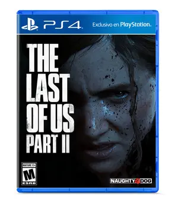

The Last of Us II
Categoria: Acción - Horror de Supervivencia
Consola: PS4
The Last of Us Part II es un videojuego de acción-aventura y horror de supervivencia desarrollado por Naughty Dog, publicado por Sony en exclusiva para la PlayStation 4 el 19 de junio de 2020. Cinco años después, Joel y Ellie se han asentado en una comunidad en Jackson (Wyoming). Allí, Ellie tiene un grupo de amigos e incluso un primer amor. Pero, un día la tranquilidad se desvanece y la joven inicia un viaje con dos objetivos: Vengar la muerte de un ser querido y la tranquilidad que le arrebataron.